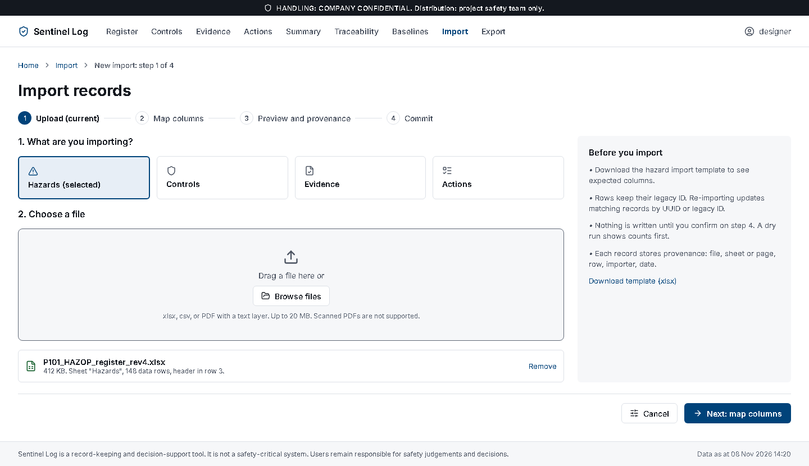

UC-15: Import from spreadsheet. Actor: Admin
Main flow
- administrator uploads import-hazards.csv as hazards for Meridian; the product parses columns and moves to column mapping (req-32).
- administrator maps Identifier, Title, Description, Analysis type, Status, and Owner, saves the mapping under a run-unique name, and proceeds; the preview shows three records to create with no errors (req-32, req-106).
- administrator reviews the dry run: counts state create and update, nothing written yet (req-106).
- administrator confirms; the product commits the run and the done page states per-record provenance (req-32, req-33).
- administrator reads the done page; it names the committed import with created counts and states per-record provenance (req-33).
- administrator runs the wizard a second time reusing the saved named mapping; the mapping applies and duplicate rows resolve through the product duplicate handling (req-32).
Stills
